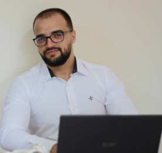

Este é o meu primeiro site e nele mostrarei minha evolução desde o começo, inicialmente usando HTML5.
Este site foi desenvolvido para mostrar o conteúdo que aprendi em HTML5 básico, e será usado como base para o futuro site usando também CSS3 e no terceiro nível; usando JavaScrpt, assim posso mostrar à minha linha de aprendizagem.
Me Chamo Cristiano Barros, sou natural do estado da Bahia, tenho 25 anos e estudo desenvolvimento web há 6 meses. Faço parte de uma comunidade de desenvolvedores chamada Agencia Gift onde compartilhamos experiências.